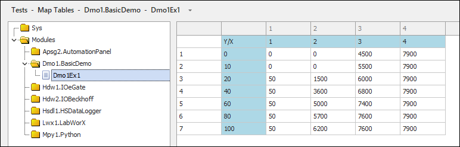
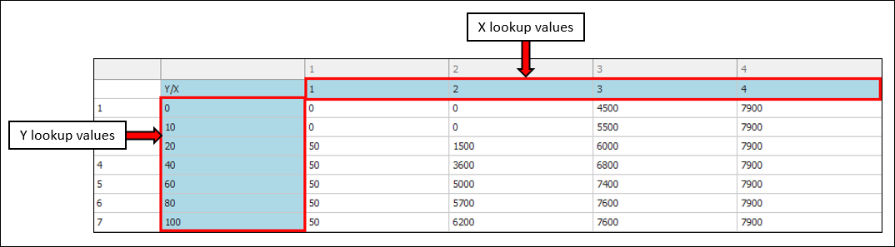

iTest User's Guide
iTest supports map tables, which can be used to linearly interpolate values in iTest. These tables can be managed in SolutionBuilder via the Map Tables editor.
Map Tables Editor

A map table is an X by Y grid of double precision values. The first row contains the breakpoint values for the X-axis, and the first column contains the breakpoint values for the Y-axis. This is a tab delimited file that uses the .2dt file extension.
The first row identifies the X lookups, and the first column identifies the Y lookups.
Example

To create a new map table, do the following:
NewMap(N).2dt, where (N) is the instance of the table (e.g., NewMap1).Table properties allow you to automate map table handling. When these properties are enabled, iTest will automatically load the map table into memory at start-up and interpolate table values in the system’s calculations at the rate of your choosing. The result channel stores the interpolated value based on the X and Y channel value lookups. In case of an error, the result channel will be set to -99999.
 |
NOTE: | Enabling/disabling the table properties will be reflected after the next rebuild. Changes to the 2D table contents will be reflected restart of iTest. |
 |
WARNING: | By default, iTest initializes channel values to 0 on startup. This will result in X and Y lookup channel values being initialized to a value of 0. This must be taken into account when designing your application. Channel values can be initialized to some other value by storing channel values in an INI file or using the Persistent Value setting for virtual output channels. |
To set table properties, do the following:

The following options are available when you right-click in the list of map tables:
Right-Click Options
| Option | Description |
| Add | Adds a new map table. |
| Remove | Removes the selected map table. |
| Rename... | Launches the Rename dialog to change the name of the selected map table. |
| Duplicate | Duplicates a selected map table and appends a numeric value to the name of the map table (e.g., NewMap1). |
| Cut | Removes the selected map table and copies it to the clipboard. |
| Copy | Copies the selected map table to the clipboard. |
| Paste | Pastes the map table from the clipboard. |
| Undo | Undoes the last action. |
| Redo | Redoes the last undone action. |
The following options are available when you right-click in the editor:
Right-Click Options
| Option | Description |
| Table Size... | Opens the Table Size dialog. |
| Copy | Copies the selected cell value to the clipboard. |
| Paste | Pastes the cell value from the clipboard. |
| Undo | Undoes the last action. |
| Redo | Redoes the last undone action. |
| Properties... | Launches the Table Properties dialog. For more information, refer to the Specifying Properties section above. |